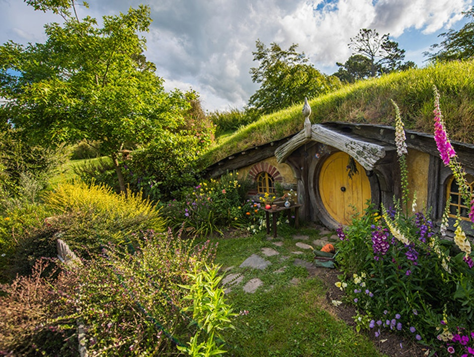
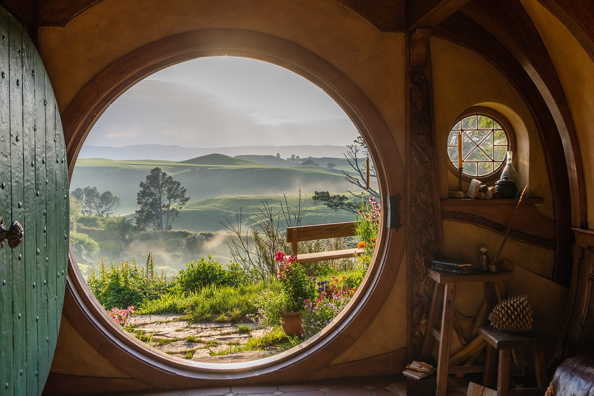

|  |  |
The Hobbiton Movie Set was a significant location used for The Lord of the Rings film trilogy and The Hobbit film trilogy. It is situated on a family run farm about 8 kilometres (5.0 mi) west of Hinuera and 10 kilometres (6.2 mi) southwest of Matamata, in Waikato, New Zealand, and is now a Tolkien tourism destination, offering a guided tour of the set.
The underlying geology of the area is that of the Hinuera Formation, a group of alluvial silts, sands and gravels laid down in the last glacial period. Originally largely marshland, it was transformed in the 19th century by a large-scale drainage scheme and is now fertile agricultural land that is also a major racehorse breeding area.
Hobbiton is located in Matamata, about 2 hours from Auckland and one hour from Rotorua.
You can rent a car and drive here on your own or you can get a guided tour to shuttle you back and forth.
Often times tour companies pair this visit with the Waitomo Glowworm Caves on a day trip from Auckland.
You can also take a bus from Auckland for about NZ$50-60, but this is your slowest option taking approximately 3 1/2 hours.